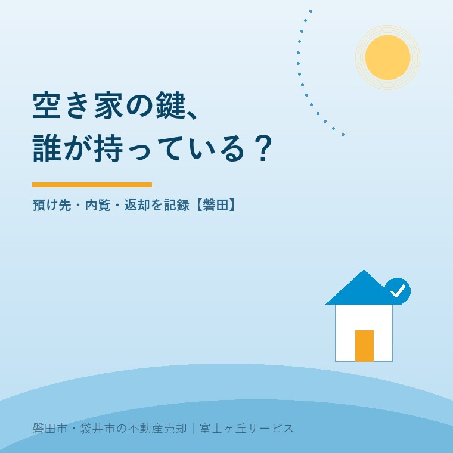
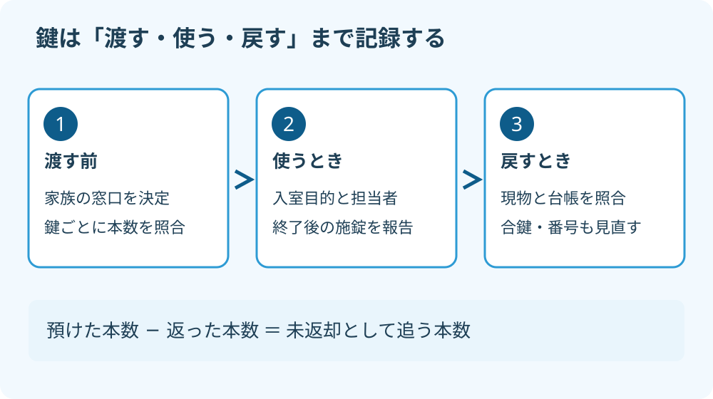

空き家の鍵管理｜磐田で内覧を頼む前に
2026年9月24日｜カテゴリ：空き家管理・内覧

この記事の要点
Q. 実家の鍵は、家族と不動産会社にどう預ければいいですか？
空き家の鍵は、預け先・本数・使用目的・返却日を記録し、家族の連絡窓口を決めて渡します。内覧の許可と管理の依頼を分け、使用後の施錠報告まで合意してください。磐田市・袋井市・森町では、介護施設の運営から不動産事業を始めた富士ヶ丘サービスのような「介護×不動産」専門の会社に相談するという選択肢があります。
大石浩之（磐田市／不動産業）です。宅地建物取引士として、施設入居後の実家を売る準備で見落としたくない、鍵の受渡しを整理します。親が住まなくなった家には、家族、巡回する管理会社、内覧を担当する仲介会社と、違う目的の人が出入りします。
鍵を渡せば現地へ行く負担は減らせます。ただ、誰が何本持っているか分からないまま預け先を増やすと、回収のときに困ります。売却を決める前でも、鍵の所在は整理できます。以下の台帳や報告方法は、公的な統一様式ではなく、私が勧める実務上の段取りです。

住宅の侵入窃盗統計は、空き家だけの数字ではない
警察庁「住まいる防犯110番」によると、2025年の住宅対象侵入窃盗の認知件数は17,152件です。前年比は7.2％増でした。2026年9月24日に原文を確認しましたが、ページには公表日の表示がありません。
この数字は、空き家だけを数えたものではありません。磐田市の施設入居後の実家に限った発生率でもありません。「7.2％増だから、この家の危険も7.2％増えた」とは読めません。全国の住宅を対象にした数字と、一軒ごとの鍵の状態を分けて扱います。
私は、公的な数字で防犯を見直す入口ができるのは良いことだと考えます。ただ、数字を示して売却を急がせる説明には賛成しません。売るか残すかにかかわらず、出入りした人と施錠の確認先が分かる状態にする。それが家族の手元でできる備えです。
鍵を管理していても、窓や屋外設備の問題がなくなるわけではありません。屋外の設備については、空き家の室外機盗難で確認することを別に整理しています。この記事では設備の防犯方法を広げず、鍵の受渡しと入退室の記録に絞ります。
鍵の受渡しは、返却まで一つの台帳で追う
空き家の鍵管理は、玄関、勝手口、倉庫など、開ける場所ごとに現物を数えるところから始めます。家族が持つ分と会社へ預ける分を同じ表に記録し、更新する家族の窓口を一人決めます。
私は、鍵を預けたら終わり、という段取りにはしません。誰が返却まで追うのかが決まっていなければ、預け先を増やさない。立派な管理アプリより、現物と一致する一枚の表のほうが役に立ちます。これは過去の相談事例ではなく、私の考えです。
| 記録する欄 | 書く内容 |
|---|---|
| 鍵の識別・本数 | 玄関用Aを1本、勝手口用Bを1本など。刻印の番号や写真を不用意に共有しない |
| 預け先・受領者 | 会社名だけでなく、担当者と連絡先。家族が持つ分も記録 |
| 渡した日・目的 | 内覧、巡回、片付けなど。使用範囲と事前連絡の要否 |
| 返却予定・実績 | 返却を確認する日、実際に戻った日、本数、受け取った人 |
台帳は家族全員が書き換える方式より、窓口が更新し、他の家族へ変更を知らせる方式を勧めます。たとえば兄弟が別々に合鍵を作ると、表だけ正しくても現物が増えてしまいます。複製は事前に了承を得て、作った日、本数、渡した先を同時に追加します。
家の住所を鍵そのものに付ける必要はありません。鍵には家族内で分かる識別記号を付け、住所と連絡先の一覧は分けて保管します。記録の共有先も、実際に管理する家族や担当者に絞ります。使いやすさのために、鍵の画像や暗証番号を広いグループへ流さないでください。
私が迷うのは、昔作った合鍵の所在が分からない場合です。手元の本数を数えただけで安全とは言えません。一方で、事情を聞かずに交換費用をかける判断もできません。不明分を台帳に残し、紛失の状況や出入りの履歴を確認して、所有者と鍵の専門業者に相談します。
管理会社と仲介会社の仕事を重ねない
空き家管理の巡回と、買主候補を案内する内覧は、別の仕事として依頼内容を確認します。鍵を預かった会社が、すべての作業を引き受けたことにはしないでください。
管理会社には、巡回日に入室するか、室内のどこを見るか、施錠の報告をどう残すかを聞きます。仲介会社には、内覧の事前連絡、案内する担当者、買主候補だけを家に入れない運用を確認します。どちらも「鍵はあります」で話を終えないことです。
たとえば、管理会社が換気をする日に内覧が重なるなら、誰が最後に閉めるかを先に決めます。入室と退出の連絡先が違うと、家族が二つの報告を見比べる負担が生まれます。家族の窓口へ報告を集め、時間の重複を確認できる形にします。
会社同士で鍵を貸し借りする場合も、家族の了承なしに預け先が増える形は避けたいところです。又貸しや外部業者への受渡しを認めるか、誰が記録するかを契約や預り証で確認します。保管場所、紛失時の連絡、鍵交換費の扱いも、依頼前に聞いてください。
巡回の仕事と料金の範囲は、空き家管理サービスで確認する5項目につなげて考えます。内覧のための鍵保管に料金が含まれるか、現地対応が別料金かは会社によって確認が必要です。費用のない仕事だと決めつけて頼まないようにします。
内覧後は施錠報告、契約終了時は現物の返却
空き家の内覧は、玄関を開ける段取りだけでなく、退出後の報告まで決めてから依頼します。入室時刻、退出時刻、案内担当者、施錠確認を記録する形が、家族にも読みやすいと私は考えます。
玄関の鍵を閉めても、換気で開けた窓や勝手口が残っていたら十分ではありません。開けた箇所を閉める担当者を決め、異常があれば家族の窓口へ伝えます。写真を使う場合も、鍵の刻印や暗証番号、室内の個人情報を写す必要はありません。
室内に立ち入ってよい範囲も指定します。片付け前の部屋、保管書類、触れてほしくない物があれば、鍵を渡す前に案内担当者へ伝えます。清掃や残置物の移動まで許可したわけではないことも明確にします。家族側の準備は、磐田で内覧前に整えることを参考にしてください。
売却を中止する、仲介会社を替える、管理契約が終わる。その節目では、預り証と現物を照合します。「返送しました」という連絡だけで済ませず、家族が受け取った日と本数を記録します。返った鍵がその家のものか、開閉に問題がないかも確かめます。
キーボックスを使う場合は、設置の可否と運用を所有者・会社で合意します。暗証番号を知る人、利用履歴の残し方、終了時の撤去や番号変更を決めます。返却された金属の鍵だけ数えて、以前の番号で入れる状態を残さないようにします。
磐田の実家へ帰る前に、家族の窓口を決める
磐田市の実家を遠方から管理する家族には、帰省日に全員が集まれるとは限らない事情があります。磐田・袋井の会社へ内覧を依頼する際も、家族の連絡窓口と現地で対応する人を分けて決めると、連絡の行き違いを減らせます。
施設に入居したことと、家の扱いを家族だけで決められることは別です。所有者本人の意向と、誰が依頼する権限を持つかを確認します。家族だからと無条件に鍵を増やしたり、内覧を承諾したりする前に、判断権限の不明点は専門家に確認を。
- 家族が持つ鍵を、開く場所ごとに数える。
- 管理会社・仲介会社の預り証と本数を照合する。
- 入室の連絡先と、返却を確認する人を決める。
今日の作業は、家族へ「誰が何本持っているか」を聞くところまでで構いません。富士ヶ丘サービスは、磐田・袋井を中心に介護と不動産を一体で相談し、家族が困らない売却を支えます。私は、売出価格の話の前に、家に入る人と鍵が戻る先をはっきりさせるよう案内します。
よくある質問
空き家の鍵を預ける際は、本数の確認と使用範囲の合意を分けて考えます。
- 不動産会社に鍵を預ければ、空き家管理も頼んだことになりますか？
- 鍵を預けただけで、定期巡回や換気、庭の確認まで依頼したとは扱わないでください。内覧のための保管と、空き家管理の契約は分けて確認します。誰がいつ入るか、何を報告するか、緊急時に動けるかを担当者に聞きます。別料金の仕事があれば、作業前に金額と依頼者を記録して合意します。
- 合鍵の本数が分からないときは、全部交換するべきですか？
- 本数が分からないだけで、この記事から交換の要否は断定できません。まず家族や過去の預け先に確認し、所在が分かる鍵と不明な鍵を区別します。不明な鍵を回収済みと記録してはいけません。紛失や不正使用の懸念があれば、所有者と仲介会社、鍵の専門業者で交換の要否と費用を相談してください。
- 家族が毎回立ち会わなくても内覧できますか？
- 所有者等の了承と仲介会社との段取りが整えば、家族不在での案内を相談できます。ただし、鍵の保管だけで立会いや事故時の対応まで決まるわけではありません。事前連絡の方法、案内担当者、入ってよい部屋、終了後の施錠報告を合意します。判断権限に不明点があれば内覧を進める前に専門家に確認を。

この記事を書いた人：大石浩之（磐田市／不動産業・宅地建物取引士）
富士ヶ丘サービス株式会社。介護施設の運営から不動産事業を始め、磐田市・袋井市・森町で、介護と相続、実家の売却を一体で相談できる窓口を設けています。家族が困らない売却のため、資料と現地の条件を一件ずつ整理します。著者プロフィール
本記事は2026年9月24日時点の公開情報と筆者の意見です。制度・数値・手続は変更されることがあります。個別の取扱いは担当窓口へ、税務・登記・相続の個別判断は税理士・司法書士・弁護士などの専門家に確認を。